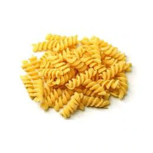
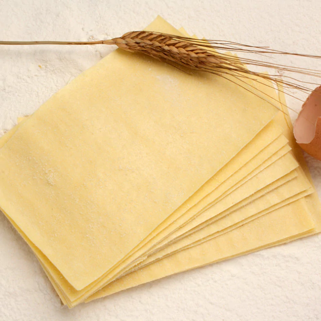
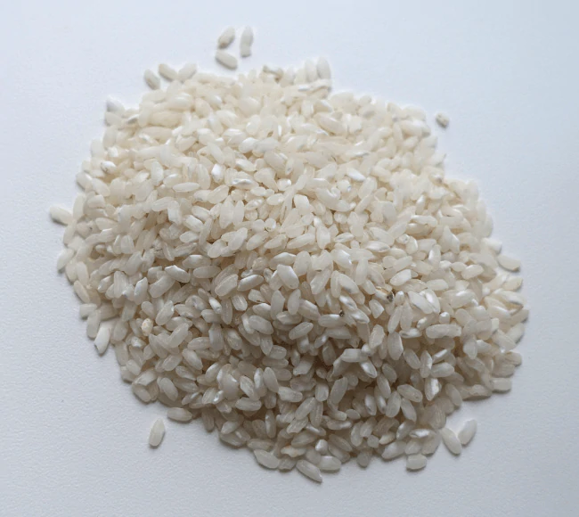

Pâtes et riz

Spirales blanches.
Contient du gluten

Feuilles pour lasagne
Contient du gluten.

Le riz long est un riz léger, non collant et dont le grain se sépare facilement. Le riz blanc permet une diminution significative du temps de cuisson par rapport à un riz complet. La teneur élevée en amidon contenue dans le riz lui confère des propriétés nutritives nécessaires pour l'organisme. Le riz blanc est riche en glucides complexes favorisant la sensation de satiété.